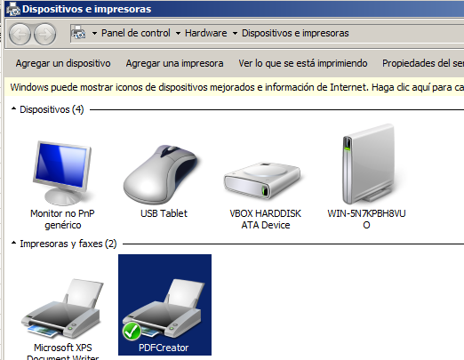
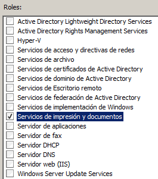
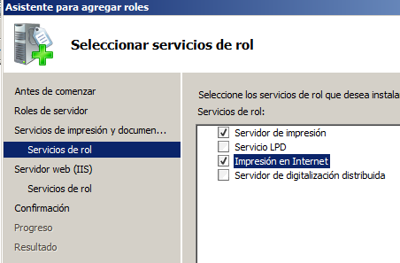
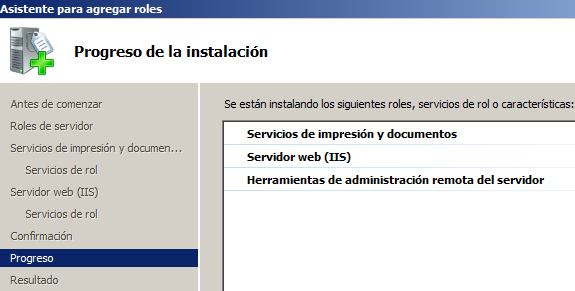
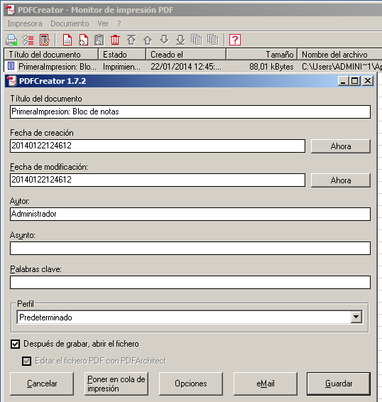
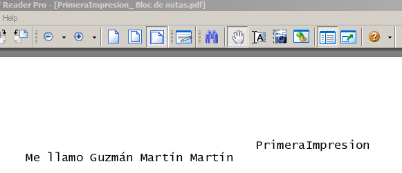
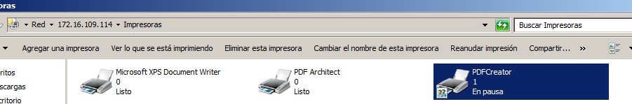
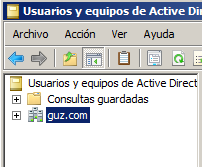
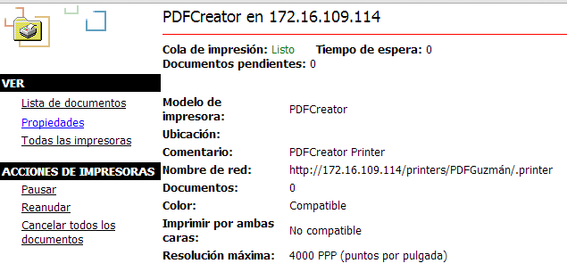
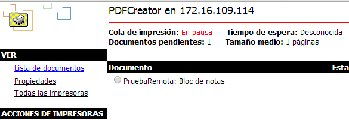

- Módulo: Sistemas Operativos
- Título del trabajo Servidor de impresión.
- Componentes del grupo: Guzmán Martín Martín
- Curso Académico: 2013/2014
- Fecha de entrega: 29 de Enero de 2014
Comenzaremos realizando la instalación del programa PDFCreator, que nos permitirá "imprimir" archivos en el ordenador cómo si se tratara de una impresora real.
Luego veremos que aparece como una impresora más.

Ahora probaremos a añadirle al servidor el rol de servicios de impresión y documentos.

Dentro de ese rol, añadiremos unos servicios específicos.

E iniciaremos la instalación.

Hacemos una prueba al darle a imprimir a un archivo que hemos creado anteriormente, nos saldrá una ventana como ésta.

Aquí podemos ver el resultado, un pdf con lo que hemos escrito en el archivo anterior.

En nuestras impresoras remotas podemos ver que aparece la del PDFCreator,
deberemos permitir que sea compartida y ponerla en pausa para captar desde el cliente que se está imprimiendo algo.

Con las herramientas de Active Directory deberemos crear un dominio.

En el navegador del cliente ponemos la IP del servidor, nos salen las propiedades de las impresoras.

Vemos que ahora se ve la cola de documentos que se van a imprimir, gracias a que está en pausa la impresora.
